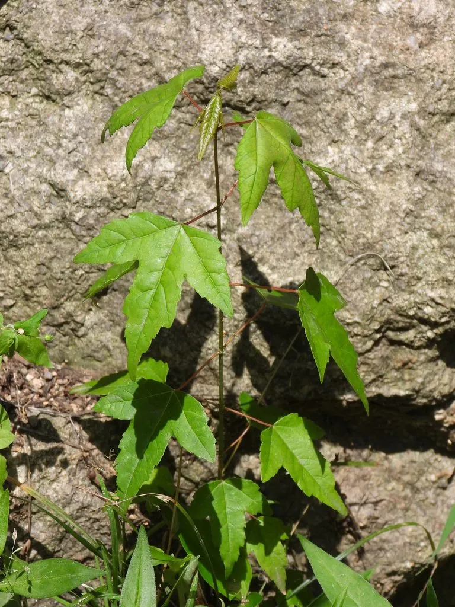

乔木 · 植物界
三角枫 Acer buergerianum

中国常见的落叶乔木，叶片掌状三裂、形似三角，秋叶转红，木材坚实，是园林与盆景的常用树种。
- 分类
- 门被子植物门纲木兰纲目无患子目科槭树科属槭属
- 栖息环境
- 海拔 1000 米以下的平原、河岸与山地，喜光稍耐阴
- 地理分布
- 中国长江流域及华北、华南、西南地区，日本也有分布
- 保护级别
- 暂无评估；中国未列入国家重点保护野生植物名录
物种志
三角枫为落叶乔木，高可达 20 m，树皮灰褐色、呈条片状剥落；叶片掌状 3 裂，裂片三角形，边缘全缘或具疏齿，叶柄较长。花期 4 月，伞房花序顶生，花小、黄绿色；双翅果黄褐色，两翅开张呈锐角或近于平行，成熟后随风传播。
三角枫分布于中国长江流域及华北、华南、西南地区，也见于日本，喜光、稍耐阴，喜温暖湿润，适宜深厚肥沃、排水良好的土壤。秋叶转红或橙黄，是优良的秋色叶树种，常植于庭院、公园与河岸；木材坚实，可制家具与农具；枝叶可入药。三角枫耐修剪、耐水湿，也是制作盆景的优良树种，江南一带常用其老桩造型。
形态与习性
- 株高可达 20 m，树皮条片状剥落
- 花期4 月，伞房花序顶生
- 果期9–10 月，双翅果
- 光照喜光，稍耐阴
- 水分喜湿润，耐水湿
- 主要用途秋色叶观赏、盆景、家具农具用材
趣味知识
- 三角枫的叶片掌状三裂、裂片呈三角形，因此得名。
- 三角枫的双翅果两翅张开近于平行，与鸡爪槭的翅果不同。
- 三角枫耐修剪、耐水湿，是江南盆景的常用树种。